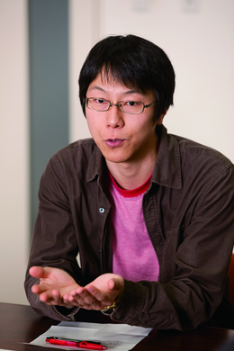
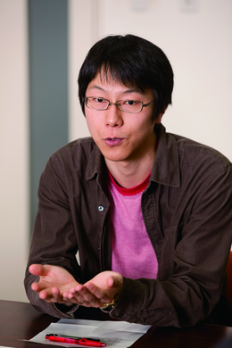

Using AI technologies to answer mathematics and physics questions presents a different type of difficulty than solving social studies questions. Furthermore, mathematics and physics require both shared and differing methodologies. We talked with Hirokazu Anai, Takuya Matsuzaki, and Hikaru Yokono, who are playing pivotal roles in developing mathematics and physics question answering technologies, about their progress on the challenge, the issues they face, and potential applications of the technologies they are developing.
 

Hirokazu Anai (left)
Visiting Professor, NII
Senior Manager, IT System Laboratory, Fujitsu Laboratories Ltd.
Professor, Kyushu University
Takuya Matsuzaki (center)
Associate Research Professor
Research Center for Community Knowledge NII
Hikaru Yokono (right)
Project Researcher
Research Center for Community Knowledge NII
The first step in solving the math and physics problems with AI is to read and understand the questions. This step is mainly handled using language processing techniques. "Language processing" here refers to converting questions, provided in the form of text, to expressions which the computer can understand. Broadly speaking, this part of the process is identical for both mathematics and physics questions. However, from that point on, the approaches diverge.
In the case of mathematics, after the meaning of the question has been determined, a formula is derived from the meaning. For different types of formulas, different reasoning algorithms (solvers) are used. The derivation process of the formula thus bridges the gap between the logical expressions of the question and the logical expressions necessary to calculate its solution. In the case of physics questions, the problem is also understood using language processing, but the next step is to use "physics simulators". They simulate the physical process described in the problem, and the solution is determined by looking at the results of the simulation. This step thus differs from the mathematics problem-solving approach. NII's Hikaru Yokono, who is involved in the physics question area of the project, explains,
"Humans understand the content of the question, infer the physical laws behind it, and use the formulas which govern those physical laws to solve the problem. Computers, on the other hand, use a physics simulator to actually replicate the situation described in the problem, measure the results, and select the choice which is closest to the simulation results."
For example, to solve a physics question about the relationship between the positions of a spring and a weight, a computer would select the answer by running simulations using various parameters, and choosing the answer which is most similar to the outcome of the simulation.
Steps towards the Goal of the
NII's Takuya Matsuzaki, involved in the mathematics area of the project, discusses the goal of passing the University of Tokyo entrance exam.
"We have found approximately 50% of the National Center Test for University Admissions questions can in principle be solved with our current design of the solving process. The basic solution methods and framework for the second-stage exam are the same as for the center test. If we start with questions that are easy for computers, and gradually expand the range of questions that can be solved, I think we'll be able to reach the passing line."
What will it take to accomplish this goal? Hirokazu Anai of Fujitsu Laboratories, a developer of the solvers used for mathematics, explains,
"It all comes down to how to convert text and diagrams into formulas. For example, even if a formula is valid, it will require a tremendous amount of calculation when there are many variables in it. There are, however, almost no entrance exam problems which could not be solved by a solver if we follow the problem solving approach envisioned by the author of the question. The key to solving exam problems within the allotted time is hence how we derive the formula."
Some questions require multiple solvers to be combined together. Since a formula has to be in a form specified by a solver, it is also important to select the right solvers.
There are also certain types of questions which are still difficult to answer.
"We don't know any algorithm for some questions, and we don't know how humans solve some questions. However, we don't take the approach of investigating the process humans use in actually solving these problems. Instead, we consider how to create a system which would achieve high scores, and if it produces positive results, then it makes sense to compare that approach to human thought processes," says Matsuzaki.
Regarding the center test physics questions, Yokono says, "Not all questions can be solved using simulators. There are still challenges to surmount." Center test physics questions tend to concentrate on four areas: dynamics, electromagnetics, waves, and thermodynamics. Existing physics simulations can be used for questions about dynamics and electricity. On the other hand, wave and thermodynamics simulations are complex, yet high school physics level questions do not demand an extremely high level of accuracy. So we need to consider an approach that is not simulation-based.
In the second-stage exam the examinees are requested to describe physical phenomena and the reasons behind them. The project has not yet begun tackling this question type. The key to solving these problems will be to combine the prediction by physics simulators together with other infrastructure technologies.
What contributions will these
technologies make in the future?
The solvers developed by Fujitsu have been used as vital tools for finding optimal designs for various products. However, they are not necessarily easy to use and have not been fully utilized.
"We would like on-site engineers to use the solvers, but unfortunately they haven't achieved widespread use. Engineers would be far more likely to use the solvers if the project made it possible to feed the solvers a question and have them automatically provide an answer," said Anai, discussing his hopes for the project.
A question solving approach based on language analysis, formula derivation, and inference algorithms would also provide important research seeds for natural language processing and solver technologies. From the perspective of natural language processing, it clearly defines the goal of language analysis in the form of formal representations. From the perspective of solver algorithms, it would systematize the know-how necessary to solve problems.
"Solver usage would increase if we clarify which problems solvers could be used to solve what kind of problems. That would contribute to greater use of mathematical methods, and increase the visibility of computer algebra and other solver technologies," said Anai.
Matsuzaki continued, discussing potential applications after the challenge, " Natural language is a very flexible tool to convey “what to do”, while a computer is a very useful tool for things that we know “how to do.”—Finding the most effective way of tying these two tools together has been a fundamental challenge in AI, and it is exactly what we need in the automatic math problem solving. The challenge will give us insights on the new relationships between humans and computers."
With regards to the future potential of physics simulator usage, Yokono said, "For example, when someone sees something rolling across a table top, they immediately reach out and keep it from falling off. However, a modern robot wouldn't know that the laws of physics would make the object fall. Advances in AI would make it possible for computers to understand real-world situations, use physical simulations to model changing situations governed by physical laws, and predict future states."
The knowledge generated by this challenge has the potential to contribute to a wide range of fields, such as intelligent robots.
(Written by Akihiko Hoya)